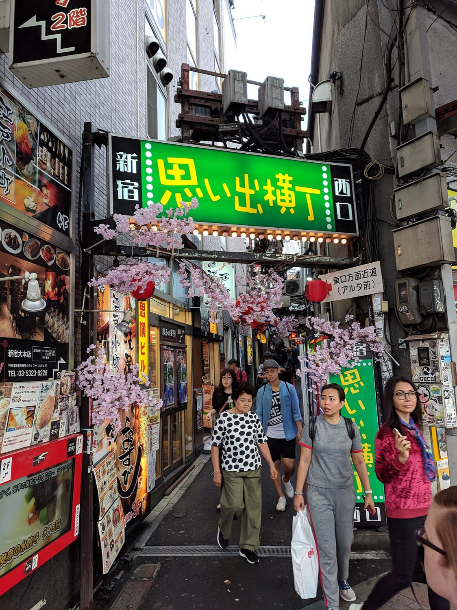
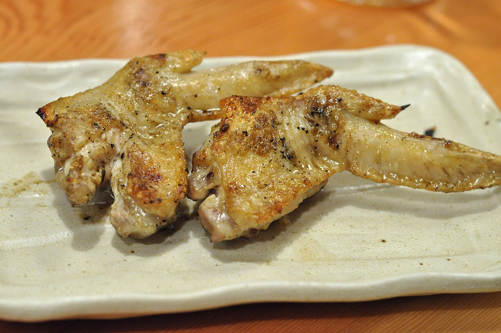
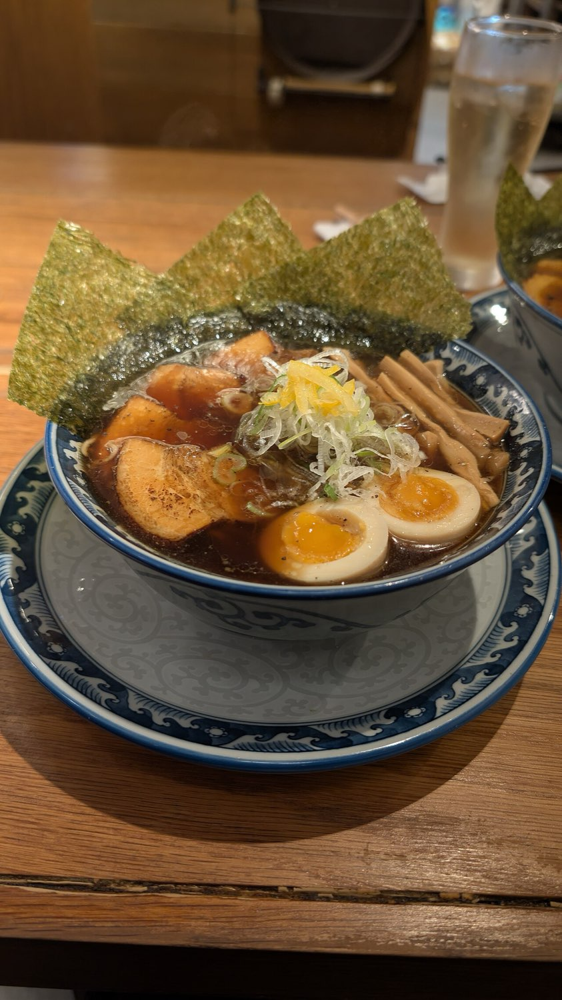
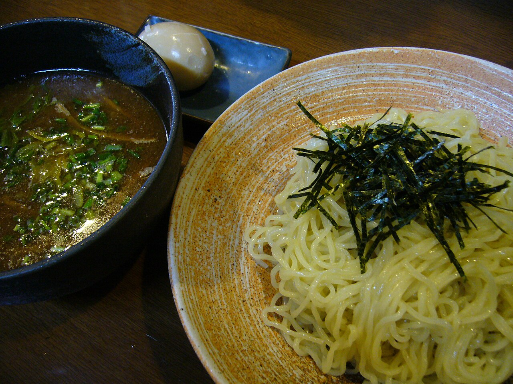
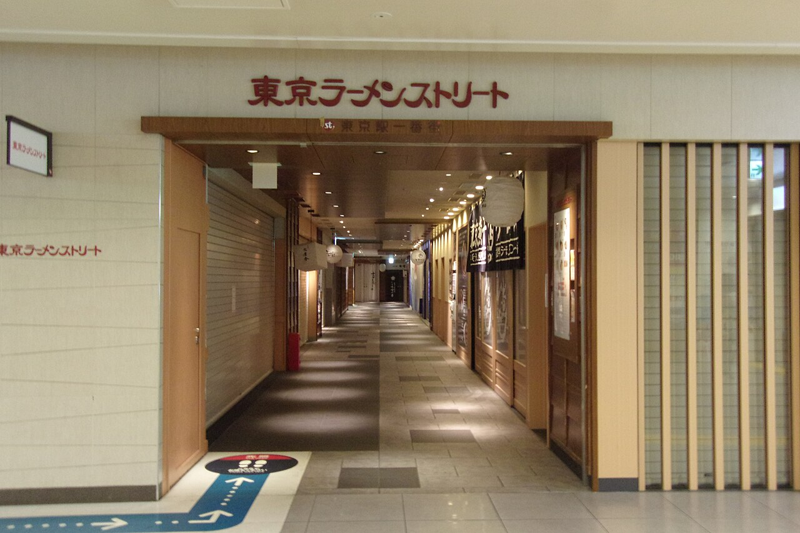

Day1
Land & Ease In
Shinjuku by night · Sat Aug 1
Arrival day, so the only goal is staying awake until a normal bedtime to beat the jet lag. Land in the afternoon, drop the bags, then wander Shinjuku as the neon comes on.


 KabukichoTokyo's biggest entertainment quarter, all neon and noise. The giant Godzilla head roars over the Toho building.Omoide YokochoA cramped, lantern-lit alley of tiny yakitori counters, smoke and beer since the postwar years.Golden GaiSix narrow lanes packed with around 200 pocket-sized bars, each seating just a handful. Pure atmosphere.Metro Government BuildingFree observation decks on the 45th floor, 202m up, with a wide city view and Mt. Fuji on a clear day. Costs nothing.Shinjuku GyoenA huge, calm landscaped park a few minutes away when the neon gets to be too much.Depachika food hallsThe basement food floors of Isetan and the big department stores, a wonderland of takeaway treats.
KabukichoTokyo's biggest entertainment quarter, all neon and noise. The giant Godzilla head roars over the Toho building.Omoide YokochoA cramped, lantern-lit alley of tiny yakitori counters, smoke and beer since the postwar years.Golden GaiSix narrow lanes packed with around 200 pocket-sized bars, each seating just a handful. Pure atmosphere.Metro Government BuildingFree observation decks on the 45th floor, 202m up, with a wide city view and Mt. Fuji on a clear day. Costs nothing.Shinjuku GyoenA huge, calm landscaped park a few minutes away when the neon gets to be too much.Depachika food hallsThe basement food floors of Isetan and the big department stores, a wonderland of takeaway treats.Good to know
- The station is a maze, pick an exit number and follow the signs to it.
- Neon looks best after dark, so save the wander for evening.
- The Government Building deck is genuinely free, no ticket.


Yakitori skewersChicken grilled every way, order momo (thigh), negima (with scallion), and tsukune (meatball) to start.Motsu nikomiA rich, slow-simmered offal-and-miso stew. More adventurous, very local.A cold oneGrab a beer or a highball, sit at the counter, and watch the grill work.The alley itselfRed lanterns, hanging noren curtains, and steam, one of the most photogenic corners of Tokyo.Good to know
- Go early evening before the counters fill up.
- Most stalls seat six to eight people, so splitting up is normal.
- Bring cash, many spots do not take cards.



ShoyuTokyo's home style, a clear soy-based broth. Clean and classic.TonkotsuRich, creamy pork-bone broth from Kyushu. The crowd-pleaser.MisoHearty and a little sweet, made for cold nights, born in Sapporo.TsukemenThick noodles served dry with a concentrated dipping broth on the side. Dip and slurp.IchiranFamous chain where you eat in a private booth and never see the staff. Great first bowl.Good to know
- Many shops order through a vending machine at the door, buy a ticket, hand it over.
- Slurping is encouraged, it cools the noodles and is a compliment.
- Tokyo Station's Ramen Street lines up eight top shops in one basement.